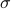
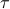
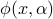
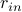
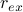
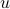
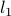

Sparse Shape Reconstruction
Aim
Formulate mask optimization as an inverse shape optimization problem, instead of an inverse imaging problem.
Note a more significant contribution lie in a new formulation, instead of a new solution. With this new formulation, bettern performance can be obtained, while solutions can be borrowed from sparsity constraint nonlinear optimizaiton.
Ideas
To construct the basis matrix for mask optimization, use similar idea as the paper in SSR do, and construt basis with rectangle with different sizes.
What does less measurement means? Is it possible to use less number of pixel in the target aerial image (pattern)? If so, then it can be possible to reduce the number of constraints, and thus the basis function matrix can be significantly reduces.
Use basis like shot, the “sparsity” can have concrete practical meaning.
Notes
the symbol  is the noise level, for fidelity term
the symbol  is the sparsity term, meausing the sparsity of the coefficient

the function  is a parametric function to characterize the shape
Questions
In Eq. (3.8), an iterative method is used to update to solve problem (3.4). But why do we need this step; what information is obtained for further optimization.
Chan and Vese measure: The inhomogeneity measures  and of  in each region. What is the physical meaning?
Gains
The Paretor curve (Figure 5) shows a trade-off between the residual error and the -norm of the solution.
Links
Sparse Shape Reconstruction (SPASH): Implementation of SSR from the authors’ website
Lasso (least absolute shrinkage and selection operator) from Stanford
SGPL1: A solver for large-scale sparse reconstruction
Spot – A Linear-Operator Toolbox
http://www.cs.ubc.ca/labs/scl/spot/. This tools use operator instead of matrix, which may be helpful for large image reconstrunction.